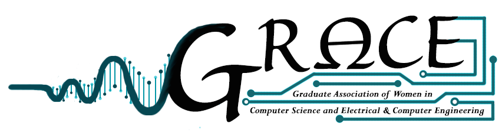

|  |
Graduate Association of women in Computer Science & Electrical and Computer Engineering at The Johns Hopkins University (JHU)
We meet weekly for lunch (bring your own lunch).
Please see the calender below for meeting dates and locations.
GRACE was founded in the fall of 2015 to foster networking and support between the graduate women of ECE and CS. The weekly lunches provide a supportive environment for mentoring and support between graduate students.
Anyone is welcome to join us, particularly women who are graduate students in ECE & CS.
You can contact the organizers here: grace-request {at} lists {dot} johnshopkins {dot} edu
Please contact this address if you would like to join the mailing list.
We have a Resource Page with some resources and information for people looking for additional communites, or looking to learn more.
This is not an endorsement of any organization or idea, but rather a starting place for learning more and continuing the conversation.
You can also find information about WiCS (Women in Computer Science).
GRACE focuses on the unique needs of the graduate women.